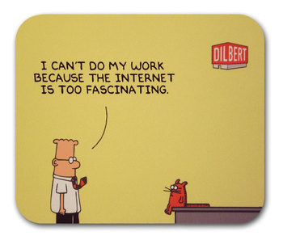
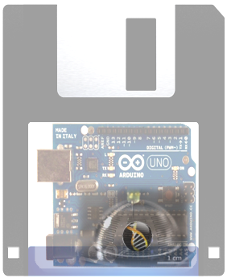
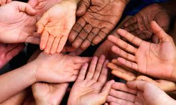

S3++ Požega 2015 (25. srpnja - 4. kolovoza): PROGRAM
PROJEKTI
- Testiranje neurotoksičnosti u razvoju putem in vitro metoda
- Život web zahtjeva. Kako radi Internet?
- Perkolacija – Uvid u nasumične sustave
- Automatizacija biologije – cjeloviti pristup
- Stvaranje ekstremiteta: Od malih prstiju do palaca
- Rast kristala: eksperimentalni pristup
RADIONICE
Vise informacija uskoro...PREDAVANJA
Vise informacija uskoro...PROJEKTI
Testiranje neurotoksičnosti u razvoju putem in vitro metoda
 Izloženost industrijskim kemikalijama, pesticidima (kao što je glufosinat-amonij) i lijekovima tijekom ranog djetinjstva dovodi do povećanja broja neurorazvojnih bolesti rasprostranjenih po cijelom svijetu. Unatoč tomu, zbog nedostatka istraživanja, do sada je samo određen broj industrijskih kemikalija identificiran kao razvojni neurotoksin. Zbog toga će naš zadatak biti dokazivanje moguće razvojne neurotoksičnosti glufosinat-amonija, koji je jedan od sastojaka u neselektivnim herbicidima, te tako posjeduje in vitro i ex vivo neurotoksični potencijal na mozak tijekom razvoja (npr. propadanje citoskeleta uzrokovano pesticidima).
Izloženost industrijskim kemikalijama, pesticidima (kao što je glufosinat-amonij) i lijekovima tijekom ranog djetinjstva dovodi do povećanja broja neurorazvojnih bolesti rasprostranjenih po cijelom svijetu. Unatoč tomu, zbog nedostatka istraživanja, do sada je samo određen broj industrijskih kemikalija identificiran kao razvojni neurotoksin. Zbog toga će naš zadatak biti dokazivanje moguće razvojne neurotoksičnosti glufosinat-amonija, koji je jedan od sastojaka u neselektivnim herbicidima, te tako posjeduje in vitro i ex vivo neurotoksični potencijal na mozak tijekom razvoja (npr. propadanje citoskeleta uzrokovano pesticidima).
Eksperimentalni pristup će biti baziran na in vitro aspektu (stanična kultura) naših neurotoksikoloških studija, omogućujući nam da analiziramo post-translacijska oštećenja i posljedice istih na razini stanice tumorskih staničnih kultura dobivenih iz C6 glioma stanica štakora. Da bismo procijenili staničnu proliferaciju, sposobnost migracije i preživljavanja C6 stanica izloženih različitim koncentracijama pesticida i njihovih metabolita, upotrijebit ćemo MTT test. Dodatno, SDS-PAGE i Western blot analize ćemo provesti na proteinima kao GAPDH i MAP2 kako bismo istražili efekt pesticida na navedene proteine
 Iva Salamon
Iva SalamonSveučiliste u Zagrebu, Hrvatska, Sveučiliste Orléans, Francuska
Iva je studentica molekularne biologije upisana na program bioindustrijskih metoda (Techniques Bio-Industrielles) – studij razvijen u suradnji Prirodoslovno Matematičkog Fakulteta u Zagrebu, Hrvatska i Sveučilišta u Orléansu, Francuska. Trenutno izrađuje svoj magistarski rad u području neuroznanosti/neurotoksikologije. U znanstvenom radu najviše je zanima razumijevanje genetskog, staničnog i molekularnog temelja i mehanizama koji imaju važnu ulogu u normalnom razvoju živčanog sustava, raznih neurodegenerativnih oštećenja i razvoja bolesti. U slobodno vrijeme Iva voli i kuhati, gledati filmove i uživati u druženju s prijateljima.
Život web zahtjeva. Kako radi Internet?
Internet postaje jedan od najvažnijih alata koje ljudi koriste za čitanje, izvršavanje i dijeljenje istraživanja, poruka i ideja. Dok ga mnogi koriste kao alat, nisu svi upoznati s načinom rada Interneta i ostalih mreža, njihovim razvojem i širenjem svog utjecaja. Internet je sam po sebi živopisan predmet istraživanja vezan za domenu raspodijeljenih sustava s vrlo aktivnim i otvorenim istraživačkim prostorom, miješajući industrijski i akademski aspekt. Komunikacija među računalima je danas očita, no mrežni protokoli koji nam to omogućuju su rezultat dugotrajnog procesa koji sadrži inženjerski i znanstveni pristup istraživanju.
Cilj ovog projekta je proučavanje, razumijevanje i rekonstrukcija svih protokola koje čine Internet ovakvim kakvim je. Proučavat ćemo strukturu Interneta i protokola preko eksperimenata i analize mrežne aktivnosti. Pritom ćemo koristiti i pisati programe kako bismo istražili što se točno događa na razini umreženja dok ‘surfamo’ webom, upotrebljavamo tražilicu, šaljemo emailove i više. Svi ovi protokoli bi pritom bili adekvatno testirani te bi na kraju projekta polaznici bili sposobni sastaviti mali internetski sustav koji će raditi unutar njihove vlastite mreže.

Rémy Léone
Telecom Paris Tech, Francuska
Remy izrađuje doktorat na Telecom Paris Tech-u, u području mreža bežičnih senzora. Njegovi istraživački interesi leže u pasivnom nadgledanju mreža, aktivnoj procjeni pričuve energije i određivanju starosti mreže. Remy je bio sudionik S3++ u 2007. i član je Društva Paris Montagne od 2006. godine. Oni su uključeni u širenje znanstvene popularizacije među mladima, davajući im mogućnost da okuse znanstveni rad.
Perkolacija – Uvid u nasumične sustave
 Većini nas je kuhanje kave ili čaja, prelijevanjem vruće vode po filteru koji sadrži kavu ili čaj, svakodnevna aktivnost. Ispod same radnje filtriranja leži proces perkolacije, koji označava prolazak tekućine kroz porozne materijale. Zamislimo blok takvog materijala. Ako ga prelijemo tekućinom, hoće li ista tekućina biti sposobna putovati od pore do pore dok ne stigne do dna? Matematički model poznat pod imenom perkolacija pruža odgovor na prethodno pitanje. Zbog svoje jednostavnosti i robusnosti, taj se model koristi i u rješavanju cijelog spektra problema – od provodljivosti materijala, biološke evolucije, epidemiologije, pa sve do formacije galaksija.
Većini nas je kuhanje kave ili čaja, prelijevanjem vruće vode po filteru koji sadrži kavu ili čaj, svakodnevna aktivnost. Ispod same radnje filtriranja leži proces perkolacije, koji označava prolazak tekućine kroz porozne materijale. Zamislimo blok takvog materijala. Ako ga prelijemo tekućinom, hoće li ista tekućina biti sposobna putovati od pore do pore dok ne stigne do dna? Matematički model poznat pod imenom perkolacija pruža odgovor na prethodno pitanje. Zbog svoje jednostavnosti i robusnosti, taj se model koristi i u rješavanju cijelog spektra problema – od provodljivosti materijala, biološke evolucije, epidemiologije, pa sve do formacije galaksija.
Na početku projekta, dizajnirat ćemo dvodimenzionalni umanjeni model, koji će nam pomoći pri razumijevanju osnovnih svojstava perkolacije. Projekt će biti realiziran eksperimentalno i preko računalne simulacije u C programskom jeziku. Istovremeno, upoznat ćemo temelje statističke fizike i drugih relevantnih teoretskih aspekata. Savladano znanje iz prvog dijela će biti važno u razumijevanju fenomena u složenim sustavima, što će u konačnici sačinjavati drugi dio projekta. Također ćemo dizajnirati eksperiment kako bismo promatrali tranziciju perkolativnog stanja u trodimenzionalnom materijalu i odredili kritičnu eksponentu prvotno predviđenu putem teorije renormalizacije.

Toni Marković
Sveučiliste u Zagrebu, Hrvatska
Toni je student 4. godine fizike na Prirodoslovno-matematičkom fakultetu Sveučilišta u Zagrebu. Sudjelovao je već tri puta na Ljetnoj Školi kao učenik (S3 2009., S3++ 2010., 2011.) i voditelj swapshopa (S3 2012). Iako je proteklo ljeto radio u području biofizike, njegovi znanstveni interesi su prešli na fiziku čvrstih stanja. Igranje košarke i video igara zaokuplja velik dio Tonijevog slobodnog vremena. Također uživa u učenju trikova, slaganju puzzli, čitanju nerealističnih knjiga i vožnji bicikla. Ali ne u isto vrijeme. To bi bilo opasno.
Automatizacija biologije – cjeloviti pristup
Nemogućnost reprodukcije rezultata velike većine bioloških istraživanja je tabu tema već neko vrijeme. S porastom cijena u istraživanju i razvoju, od posebne je važnosti riješiti problem reproducibilnosti. Trenutno postoji mnogo zanimljivih pristupa koji se koriste u rješavanju postojećih problema, kao što su ‘redukcija nedosljednosti’ putem definiranja standardnih formata za dijeljenje rezultata bioloških eksperimenata, ‘smanjenje faktora ljudske pogreške’ putem automatizacije bioloških eksperimenata i smanjenjem moguće varijabilnosti koja se događa uslijed izmjene raznih osoba unutar jednog eksperimenta, te na kraju ‘poboljšanje komunikacije’ omogućujući bolju dostupnost znanstvenim podatcima.
Unutar ovog projekta, učenici će učiti o prethodnim pristupima koji su se upotrebljavali za smanjenje višeznačnosti u biološkim istraživanjima. Postoje razni pristupi koji se trenutno razvijaju u svrhu automatizacije i mi ćemo naučiti nešto o uređajima koji se trenutno koriste (npr. mikrofluidni sustavi i roboti za pipietiranje). Pokušat ćemo riješiti prethodno navedene probleme reproducibilnosti po predlošku
računalnih znanosti. Kako bismo to ostvarili, raspravljat ćemo o jednostavnom programskom jeziku kojeg trenutno razvijamo, a koji je sposoban opisati biološki eksperiment i naknadno automatsko izvršavanje procesa na raznim platformama. Učenici će opisati biološke eksperimente unutar jednostavnog programskog jezika i tako naučiti kako se oni izvršavaju, odnosno koje modifikacije eksperimentalni protokol mora proći u svrhu automatizacije.

Vishal Gupta
Tehničko Sveučiliste Madrid, Španjolska
Vishal ima prvostupničku diplomu u području biotehnologije te magistarsku diplomu u području nanobiofizike. Trenutno izrađuje svoj doktorat baveći se umjetnom inteligencijom na Sveučilištu u Madridu. U znanosti, Vishal najviše voli spajati biologiju, fiziku i inženjerstvo. Kad ne radi, voli čitati, plesati, kuhati i putovati.

Ismael Gomez Garcia
Tehničko Sveučiliste Madrid, Španjolska
Ismael je dobio svoju prvostupničku diplomu iz matematike na Sveučilištu u Madridu 2011. godine. 2012. je završio dodatni prvostupnički studij računalnog inženjerstva, nakon čega je upisao magisterij iz istog područja. Trenutno izrađuje doktorat na usmjerenoj evoluciji i automatizaciji mikrofluidnih sustava, s posebnim interesom u automatizaciji laboratorijskih procesa i modeliranju evolucijskih pojava. Kad ne radi, Ismael uživa u igranju nogometa, čitanju i slušanju glazbe. Ismael će po prvi puta sudjelovati na Ljetnoj školi znanosti.
Stvaranje ekstremiteta: Od malih prstiju do palca
Embrionalni razvoj je tijesno reguliran proces. Mnogo gena mora biti eksprimirano u pravo vrijeme, na pravom mjestu i u odgovarajućoj količini kako bi se dijelovi tijela pravilno formulirali. Ako promotrimo naše ruke, većina nas je rođena s pet prstiju na svakoj ruci. Struktura naših ruku nam omogućuje da držimo ipete, tipkamo na računalu i radimo puno više raznih stvari. Iako neki ljudi imaju duge, vitke prste, a drugi kratke, nezgrapne prste, omjer veličina, kao i sama organizacija prstiju je vrlo slična. Unatoč tomu, neki ljudi su rođeni s abnormalnostima na rukama, kao što su srasli prsti, dodatni ili smanjeni broj prstiju. Razumijevanje genetskog mehanizma koji vodi do formacije ruke neće nam pomoći samo u detekciji potencijalnih uzroka navedenih abnormalnosti, nego će istodobno pomoći u misiji rasvjetljavanja procesa regeneracije udova.
U ovom projektu istražit ćemo uzorke genske ekspresije u normalnom razvoju mišjih ekstremiteta. Prvo, koristit ćemo in situ hibridizacijsku tehniku na tkivnim prerezima kako bi mapirali i vizualizirali vremenske i prostorne ekspresijske domene raznih gena povezanih s formacijom ekstremiteta. Učenici će pri tom savladati osnovne koncepte embrionalnog razvoja s naglaskom na ekstremitete. Također će biti upoznati s in vitro RNA vizualizacijskim metodama. Nastavit ćemo s istraživanjem posljedica određenih genomskih aberacija na razvoj ekstremiteta proučavajući abnormalnosti vezane uz ekstremitete. Učenici će pri tom naučiti koncepte dalekosežne genske regulacije preko pojačivača. Također će saznati kako provesti validaciju mutacija korištenjem PCR metode i gel-elektroforeze. Putem navedenih vježbi, učenici će uvidjeti kako se izvode uobičajene laboratorijske tehnike te kako teče proces razmišljanja u području razvojne biologije.

Leslie Pan
EMBL Heidelberg, Njemacka
Leslie trenutno izrađuje svoj doktorat na EMBL-u u Heidelbergu, pritom izučavajući kromosomsku dinamiku dalekosežnih pojačivača i njihovih ciljnih gena. Stekla je prvostupničku diplomu iz kemije/biokemije na Sveučilištu California u San Diegu. Prije studija, radila je kao koordinator kliničkih istraživanja na Karolinska institutu. Možete ju pronaći u restoranima dok isprobava novu hranu ili u stanu dok čita nefiktivnu literaturu i gleda crtiće kako bi naučila njemački. Ovo je prvi put da Leslie sudjeluje na Ljetnoj Školi Znanosti.
Rast kristala: eksperimentalni pristup
 Čak i ako toga nismo svjesni, kristali su svuda oko nas u prirodi. Minerali, snježne pahuljice, čak i stolna sol je sastavljena od kristala. No oni nisu samo lijepe stvari koje je priroda stvorila. Sami kristali i posebice rast kristala su ključni za čovječanstvo. Doista, većina vaših lijekova je napravljena putem rasta kristala i potrebno je savršeno usvojiti taj proces kako bismo imali korisne i sigurne lijekove. Proces rasta kristala se također koristi u izradi nakita, procesiranju hrane, te čak i u
vojnoj industriji! Znanstvena područja koja koriste kristale postala su brojna i različita, polazeći od produkcije lijekova pa sve do prehrambene industrije, te će rasti i u budućnosti.
Čak i ako toga nismo svjesni, kristali su svuda oko nas u prirodi. Minerali, snježne pahuljice, čak i stolna sol je sastavljena od kristala. No oni nisu samo lijepe stvari koje je priroda stvorila. Sami kristali i posebice rast kristala su ključni za čovječanstvo. Doista, većina vaših lijekova je napravljena putem rasta kristala i potrebno je savršeno usvojiti taj proces kako bismo imali korisne i sigurne lijekove. Proces rasta kristala se također koristi u izradi nakita, procesiranju hrane, te čak i u
vojnoj industriji! Znanstvena područja koja koriste kristale postala su brojna i različita, polazeći od produkcije lijekova pa sve do prehrambene industrije, te će rasti i u budućnosti.
Ovaj projekt se sastoji od dva dijela. U početku ćemo otkriti kako kristal nastaje, zahvaljujući raznim aktivnostima u kojima ćemo otkriti kakvo je ustrojstvo kristalne strukture. U drugom dijelu ćemo eksperimentalno pokušati razumjeti kako funkcionira rast kristala pomoću kemije. U tu svrhu promatrat ćemo rast nekoliko kristala iz raznih komponenata kako bismo vidjeli razne oblike i boje, te naposljetku i finalni produkt rasta kristala. Istražit ćemo važnost cijelog procesa, ponajviše ulogu mogućih modifikacija (što može biti od posebne važnosti u farmaceutskoj industriji). Naposljetku, formirani kristali će nam omogućiti da povežemo teoretske i eksperimentalne koncepte u razvoju kristala.

Juliette Piquard
Sveučilište Grenoble, Francuska
Juliette trenutno izrađuje doktorat iz područja kristalografije na Sveučilištu Grenoble. Njen znanstveni interes je karakterizacija mikrostrukture i rasta kristala. U slobodno vrijeme, Juliette voli čitati knjige, gledati filmove i igrati igrice. Također se bavi i crtanjem, posebice stripova. Sudionica je znanstvenog kluba koji se bavi popularizacijom znanosti, s posebnim naglaskom na kemiji. Juliette je već sudjelovala na Ljetnoj Školi 2007. na projektu iz područja astronomije.
Copyright © 2014 Društvo za edukaciju van okvira (EVO). Sva prava pridržana.
Web dizajn: Martina Mijušković. Općeniti tekst: Branimir Lukić i Martina Mijušković. Prijevod na hrvatski: Matilda Maleš.